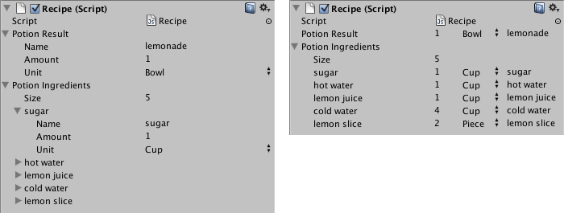

Base class to derive custom property drawers from. Use this to create custom drawers for your own Serializable classes or for script variables with custom PropertyAttributes.
PropertyDrawers have two uses:
If you have a custom Serializable class, you can use a PropertyDrawer to control how it looks in the Inspector. Consider the Serializable class Ingredient in the script below:
using System; using UnityEngine;
public enum IngredientUnit { Spoon, Cup, Bowl, Piece }
// Custom serializable class [Serializable] public class Ingredient { public string name; public int amount = 1; public IngredientUnit unit; }
public class Recipe : MonoBehaviour { public Ingredient potionResult; public Ingredient[] potionIngredients; }
Using a custom PropertyDrawer, every appearance of the Ingredient class in the Inspector can be changed.
You can attach the PropertyDrawer to a Serializable class by using the CustomPropertyDrawer attribute and pass in the type of the Serializable class that it's a drawer for.
You can either use UI Toolkit to build your custom PropertyDrawer or you can use IMGUI. To create a custom PropertyDrawer using UI Toolkit, you have to override the PropertyDrawer.CreatePropertyGUI on the PropertyDrawer class. To create a custom PropertyDrawer using IMGUI, you have to override the PropertyDrawer.OnGUI on the PropertyDrawer class.
**Note**: You cannot have UI Toolkit running inside IMGUI, which means that if your custom PropertyDrawer only has a UI Toolkit implementation, it will not work inside an IMGUI custom Inspector or a parent IMGUI custom PropertyDrawer. In Unity 2022.2 and above, the default Inspector uses UI Toolkit exclusively in custom PropertyDrawers. Prior to 2022.2, it is recommended that you either implement both IMGUI and UI Toolkit versions of each PropertyDrawer, or make sure they are exclusively used inside custom UI Toolkit inspectors.
Here's an example of a custom PropertyDrawer written using UI Toolkit:
using UnityEditor; using UnityEditor.UIElements; using UnityEngine.UIElements;
// IngredientDrawerUIE [CustomPropertyDrawer(typeof(Ingredient))] public class IngredientDrawerUIE : PropertyDrawer { public override VisualElement CreatePropertyGUI(SerializedProperty property) { // Create property container element. var container = new VisualElement();
// Create property fields. var amountField = new PropertyField(property.FindPropertyRelative("amount")); var unitField = new PropertyField(property.FindPropertyRelative("unit")); var nameField = new PropertyField(property.FindPropertyRelative("name"), "Fancy Name");
// Add fields to the container. container.Add(amountField); container.Add(unitField); container.Add(nameField);
return container; } }
Here's an example of custom PropertyDrawer written using IMGUI. Compare the look of the Ingredient properties in the Inspector without and with a custom PropertyDrawer:

using UnityEditor; using UnityEngine;
// IngredientDrawer [CustomPropertyDrawer(typeof(Ingredient))] public class IngredientDrawer : PropertyDrawer { // Draw the property inside the given rect public override void OnGUI(Rect position, SerializedProperty property, GUIContent label) { // Using BeginProperty / EndProperty on the parent property means that // prefab override logic works on the entire property. EditorGUI.BeginProperty(position, label, property);
// Draw label position = EditorGUI.PrefixLabel(position, GUIUtility.GetControlID(FocusType.Passive), label);
// Don't make child fields be indented var indent = EditorGUI.indentLevel; EditorGUI.indentLevel = 0;
// Calculate rects var amountRect = new Rect(position.x, position.y, 30, position.height); var unitRect = new Rect(position.x + 35, position.y, 50, position.height); var nameRect = new Rect(position.x + 90, position.y, position.width - 90, position.height);
// Draw fields - pass GUIContent.none to each so they are drawn without labels EditorGUI.PropertyField(amountRect, property.FindPropertyRelative("amount"), GUIContent.none); EditorGUI.PropertyField(unitRect, property.FindPropertyRelative("unit"), GUIContent.none); EditorGUI.PropertyField(nameRect, property.FindPropertyRelative("name"), GUIContent.none);
// Set indent back to what it was EditorGUI.indentLevel = indent;
EditorGUI.EndProperty(); } }
The other use of PropertyDrawer is to alter the appearance of members in a script that have custom PropertyAttributes. Say you want to limit floats or integers in your script to a certain range and show them as sliders in the Inspector. Using the built-in PropertyAttribute called RangeAttribute you can do just that:
using UnityEngine; using System.Collections;
public class ExampleClass : MonoBehaviour { // Show this float in the Inspector as a slider between 0 and 10 [Range(0.0F, 10.0F)] public float myFloat = 0.0F; }
You can make your own PropertyAttribute as well. We'll use the code for the RangeAttribute as an example. The attribute must extend the PropertyAttribute class. If you want, your property can take parameters and store them as public member variables.
// This is not an editor script. The property attribute class should be placed in a regular script file. using UnityEngine;
public class RangeAttribute : PropertyAttribute { public float min; public float max;
public RangeAttribute(float min, float max) { this.min = min; this.max = max; } }
Now that you have the attribute, you need to make a PropertyDrawer that draws properties that have that attribute. The drawer must extend the PropertyDrawer class, and it must have a CustomPropertyDrawer attribute to tell it which attribute it's a drawer for. Here's an example using IMGUI:
// The property drawer class should be placed in an editor script, inside a folder called Editor.
// Tell the RangeDrawer that it is a drawer for properties with the RangeAttribute. using UnityEngine; using UnityEditor;
[CustomPropertyDrawer(typeof(RangeAttribute))] public class RangeDrawer : PropertyDrawer { // Draw the property inside the given rect public override void OnGUI(Rect position, SerializedProperty property, GUIContent label) { // First get the attribute since it contains the range for the slider RangeAttribute range = attribute as RangeAttribute;
// Now draw the property as a Slider or an IntSlider based on whether it's a float or integer. if (property.propertyType == SerializedPropertyType.Float) EditorGUI.Slider(position, property, range.min, range.max, label); else if (property.propertyType == SerializedPropertyType.Integer) EditorGUI.IntSlider(position, property, Convert.ToInt32(range.min), Convert.ToInt32(range.max), label); else EditorGUI.LabelField(position, label.text, "Use Range with float or int."); } }
Note that for performance reasons, EditorGUILayout functions are not usable with PropertyDrawers.
Note: Lists and arrays are handled differently with custom drawers. When the SerializedProperty is passed to the CreatePropertyGUI method, it represents each item in the list. However, when the custom drawing is needed for the list itself, you must wrap the property accordingly.
If you need your property drawer to perform cleanup tasks, such as detaching itself from editor events, you can implement the IDisposable interface. This interface allows you to define a method that will be invoked when the Editor is being destroyed, giving you the opportunity to handle any necessary cleanup operations.
Additional resources: PropertyAttribute class, CustomPropertyDrawer class.
| Property | Description |
|---|---|
| attribute | The PropertyAttribute for the property. Not applicable for custom class drawers. (Read Only) |
| fieldInfo | The reflection FieldInfo for the member this property represents. (Read Only) |
| Method | Description |
|---|---|
| CanCacheInspectorGUI | Override this method to determine whether the inspector GUI for your property can be cached. |
| CreatePropertyGUI | Override this method to make your own UI Toolkit based GUI for the property. |
| GetPropertyHeight | Override this method to specify how tall the GUI for this field is in pixels. |
| OnGUI | Override this method to make your own IMGUI based GUI for the property. |